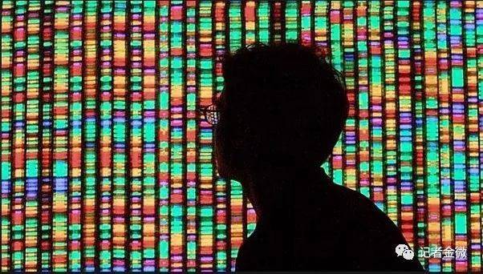

华大基因被罚！14万孕妇基因组已流到国外，细思极恐！

文 | 金微
10月25日晚，科技部一条消息“华大基因等六单位违反中国人类遗传资源管理规定被罚”。可能很多人没有关注这条消息，这几年，中国人基因信息流失到海外屡屡见报，这一次幕后黑手终于被国家曝光。
这些公司还是国内知名的上市公司，经常见诸媒体报端的明星企业，谁知道他们在背后做这些违法的事呢。
我们先来看看新闻，科技部网站上共通报华大基因、阿斯利康、药明康德、上海华山医院等6家公司。
华大基因的处罚书是“国科罚（2015）2号。”内容是：根据《人类遗传资源管理暂行办法》（国办发〔1998〕36号）、《中华人民共和国行政处罚法》等有关规定，中国人类遗传资源管理办公室对深圳华大基因科技服务有限公司（以下简称华大科技）执行“中国女性单相抑郁症的大样本病例对照研究”国际科研合作情况进行了调查，现已调查终结。
经查明，存在以下违法违规行为:华大科技与华山医院未经许可与英国牛津大学开展中国人类遗传资源国际合作研究，华大科技未经许可将部分人类遗传资源信息从网上传递出境。上述行为违反了《人类遗传资源管理暂行办法》第四条、第十一条、第十六条规定。
《人类遗传资源管理暂行办法》第四条规定，国家对重要遗传家系和特定地区遗传资源实行申报登记制度；未经许可，任何单位和个人不得擅自采集、收集、买卖、出口、出境或以其他形式对外提供。
苏州药明康德新药开发股份有限公司未经许可将5165份人类遗传资源（人血清）作为犬血浆违规出境。
华大基因向新京报记者回应称，公司在2015年收到该行政处罚后，第一时间整改，科技部已批准华大基因恢复开展人类遗传资源国际合作工作。而药明康德等上市公司则没有回应。
14万孕妇基因样本
如此轻描淡，华大基因希望这事尽快过去，也不希望引起国人注意。我想起前不久看到的一则新闻，细思极恐。
今年10月新华网有一条关于华大基因的新闻：研究人员完成迄今最大规模的中国人基因组测序（新华网）。
报道内容是：中国研究人员领导的一个国际研究团队４日说，他们完成了迄今最大规模的中国人基因组测序和分析，有助于揭示基因与生育的联系以及了解中国人口基因结构。
这项发表在新一期美国《细胞》杂志上的研究显示，深圳华大基因研究院用“无创产前基因检测”技术收集了超过１４万名中国孕妇的部分基因组样本。“无创产前基因检测”是对孕妇少量游离ＤＮＡ进行测序以检测染色体异常的一种技术。
研究人员表示，这项研究的测序对象约占中国总人口的万分之一，除汉族外还覆盖了３６个少数民族。研究确认了与身高和身体质量指数（ＢＭＩ）等表型有关的新的遗传位点，还发现了中国人基因组中独特的病毒ＤＮＡ分布。测序结果还显示，中国人拥有一些印度人、东南亚人和沿古丝绸之路上的欧洲人中常见的遗传变异。
研究发现，一个叫ＮＲＧ１的基因变异情况与孕妇生双胞胎的概率有关。此外，有一个基因的变异与孕妇血液中疱疹病毒６型浓度高有关，后者是导致婴儿出现“蔷薇疹”的常见原因。
论文共同作者、华大基因研究院院长徐迅说，尽管“无创产前基因检测”是低通量测序，但测序对象基数大，因此上述数据仍有助于对中国人口基因结构有一个全局性的认识。论文共同作者、美国加利福尼亚大学伯克利分校综合生物学教授拉斯穆斯·尼尔森说，能获得这么大的样本量，找出基因变异与人类特征间的关联，这很了不起。(全文完)
外媒报道细胞杂志的研究，华大是当作重大成就来“炫耀”，吃瓜群众是看了一回热闹，估计被采集基因序列的人估计也是一头雾水，不知问题的严重性！
但是，这个结果却是震惊了不少业内人。我一位在国外生物界朋友给我来信说：这是一个严重的问题。这些数据落在外国人手里会有什么结果真是不敢想象，我们中国人的基因信息已经没有任何秘密可言，这就像是悬在汉人头上的一颗定时炸弹。
基因信息来源可疑
针对这条新闻，有几个关键信息：
华大基因称获取了14万名中国孕妇的部分基因组样本。我们要问的是，这些信息是怎么来的?如此大规模的人群信息，是公开采集的还是私下搜集。
按《人类遗传资源管理暂行办法》第四条规定，未经许可，任何单位和个人不得擅自采集、收集、买卖、出口、出境或以其他形式对外提供。
这14万孕妇的信息是与国外一起研究的，这就涉及到涉外问题。就是连论文共同作者、美国加利福尼亚大学伯克利分校综合生物学教授拉斯穆斯·尼尔森都感到意外“能获得这么大的样本量，这很了不起。”
就算华大基因通过了审批。但搜集了14万名中国孕妇信息，这些孕妇是否知情，是否知道自己的基因 组信息用来作基因研究了。按报道所说，深圳华大基因研究院用“无创产前基因检测”技术收集了超过１４万名中国孕妇的部分基因组样本。华大基因是作基因测序的，利用基因测序检查搜集这些信息很容易。
关键是，孕妇做基因测序时，可能并不知情他们的基因是用来做研究的，等于她们的隐私保护上处于放任状态！华大基因收集之后，又给外国人做研究，还拿出来炫耀，这才暴露出来。
一名业内人士认为：华大基因涉违背职业操守，侵犯了公民权利 。14万人基因检测可能都只是华大的生育服务项目的客户，华大却把客户基因材料作为他用。明显没有授权，是大规模侵犯公民权。而且擅自和他国合作，对国家安全构成潜在危害。华大的客户，有可能基因信息泄露，客户及其亲属或基因近似人群，有被生物攻击的可能。就像大家献血只是给医院抢救病人使用，而绝不是默认授权研究基因缺陷或做其他用途。真不敢想象：这些数据落在外国人手里会有什么结果。
也就是说，有了这些基因信息，就有了针对中国人种的特定生物武器的基础！说基因武器可能有些危言耸听了，但是针对动物植物特定基因的研究早已是事实，中国是大豆的原产国，但是现在大豆被打的一败涂地，一个很重要原因是美国人从中国大豆中找到了高产基因。
最新中国遗传学会理事、陕西省政协委员吉万全在接受新京报记者采访时说，无论是人类还是动植物的遗传信息流出国外，都有可能对我国产生不利影响，“我国的野生大豆基因曾流传至美国，美国从中找出高产量等基因，而我们未能把握住这个机会”。
非典往事
2003年，我们国家爆发非典，非典结束还有一起知名的公共舆论事件。北京大学法律系硕士童增撰写了一本名为《最后一道防线——中国人基因流失忧思录》的书，向全体中国人发出警示：非典可能是针对中国人的基因武器！
但当时大家不接受这种观点，以方舟子为代表的科普人士对此大加批判，还不少专家表示：“这样的怀疑是非常不好的，必须要有科学的基础才行。”
当时媒体纷纷采访童增，他告诉记者写书的初衷：“1998年，我参加过一个‘中国西部老人长寿监测服务’的国际合作项目，发现美国、德国等一些机构偷偷地在中国采集老人的血样，从事基因研究。”
也就是从那时起，童增开始关注人类基因问题，他请教了许多遗传学专家、查阅了大量基因资料。“中国的基因流失让我感到中华民族受到的潜在威胁。这是把双刃剑，通过它控制人种是件可怕的事情”。童增认为怀疑非典是专门针对华人的基因武器，主要是非典死亡的主要是华人。
但是，方舟子就在媒体上大造舆论，称这是阴谋论，同时对童增进行人身攻击和批判，他说，作者童增做为法律系毕业生，连基因、病毒究竟是怎么回事也不甚了然，没有必要的遗传学知识，就敢发惊人之语。
事实上，童增说出了一部分事实，说非典可能只是一种提醒。但在方舟子的科普式人身攻击下，这个话题湮没了，没有引起足够重视。
中国的基因流失并非空穴来风。上世纪90年代初开始，陆续有许多美中合作的人体实验项目在中国内地展开，常见的手段是美国的研究机构出钱，通过中国留学生回国做项目，在中国人中进行人体试验，然后把试验获得的血清或DNA样本送回美国本土进行研究。
2010年，我在新华社工作期间，接触过这些事，对国外搜集基因信息是知道的。
当年，新华社中国特稿社副社长、高级记者熊蕾（熊向晖之女）等就曾发表数篇报道评论，呼吁严格管理中国人基因数据的收集、交换和传播。她的基本考虑是以基因技术为主要内容的基因战和生物国防的安全需要；她呼吁，没有国家安全部门和生物国防部门的核准，任何机构或人员都不得在中国搞中国人种的基因数据规模采集、交换和传播。
熊蕾的报道评论引起较大关注，后来，美国方面接受批评，处罚了在中国大规模采集中国人种基因数据的人员。
我的那位国外朋友看到外媒的报道还在问我，熊蕾在哪，不知她到故事的发展了吗?
这几年，因为这个领域比较专业，媒体不太报道这个话题了，国人也很少关注，到现在华大基因这个事出来，也就当一般新闻看。而且，华大基因都可以堂而皇之大大方方地搜集中国人基因信息给国外作研究，还发表了论文炫耀，不得不说，中国人在基因安全的保护和警惕性不如十年前。
北京大学基础医学院免疫学系教授王月丹向澎湃新闻表示，严厉查处非常有必要。此举体现了国家有关部门对国人基因和遗传信息安全的重视。“违反中国人类遗传资源管理规定的案件也反映出个别企业的法律意识淡薄、国家安全意识淡薄，为了个别公司的私利，随意泄露涉及国家和人民安全的信息，应进一步加大查处和严惩力度，以维护国家和人民的利益与安全。”
我问了国内权威机构教授基因流失到海外意味着什么，他回复说：这意味着中国人群的基因信息，可能被西方掌握，可以用来提升生物武器的精准性，主要是大家的知识不够理解这个问题，而且我们国家现在的技术达不到利用这些信息发展武器，所以有些人觉得别人也没有这样的技术，不加警惕也正常的。
作者：金微（财经媒体人）